Präzisionsmechanik aus einer Hand
Die deico AG ist ein kleiner aber feiner Dienstleister für Präzisionsmechanik mit Sitz im Zürcher Oberland. Wir drehen, fräsen und konstruieren nach Ihren Vorgaben.
- Losgrösse
- ab 1 Stück
- Fräsen
- 5 Achsen
- Wiederholbarkeit
- ≤ 1 µm
- Standort
- 8636 Wald ZH
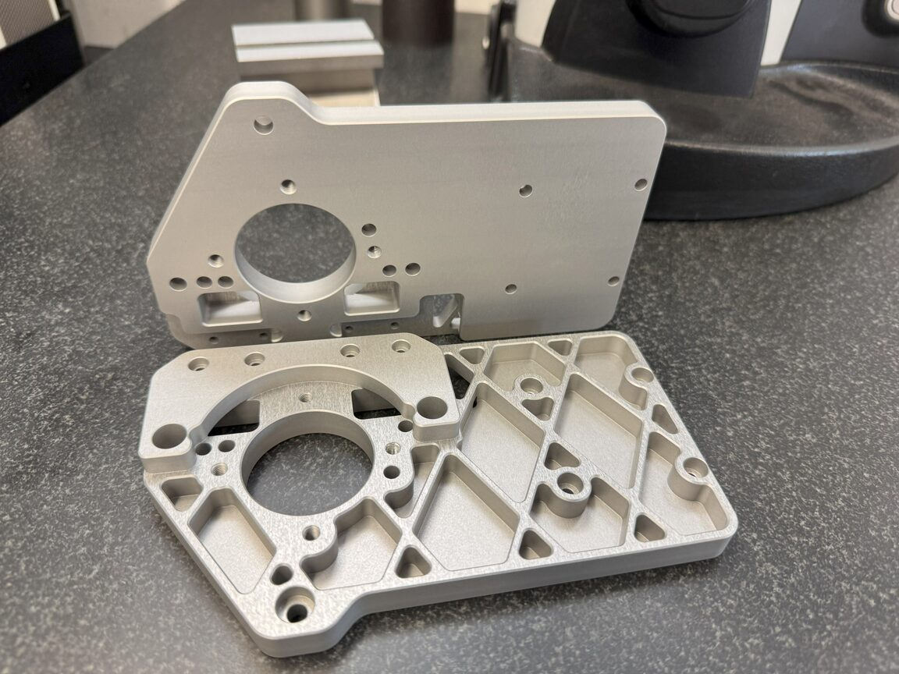
Vom Einzelteil bis zur Serie
Die Einhaltung Ihrer Spezifikationen ist uns oberstes Gebot.
-
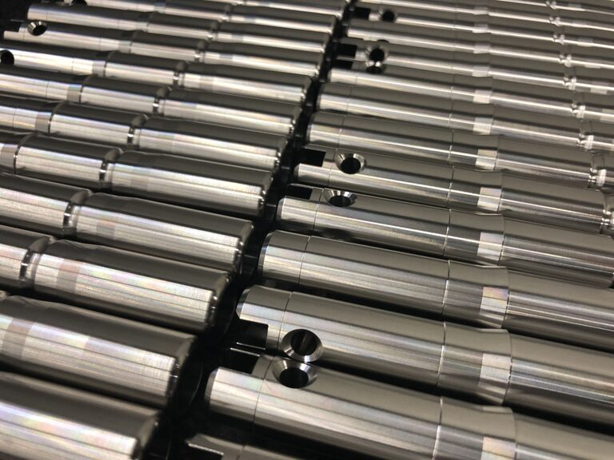
01 / DrehenCNC Drehen
Wir produzieren Ihre Drehkomponenten in CNC-Lohnfertigung. Gefertigt wird nach Ihren 3D-Daten oder Zeichnungen. Ersatzteile stellen wir auch nach Muster her.
-
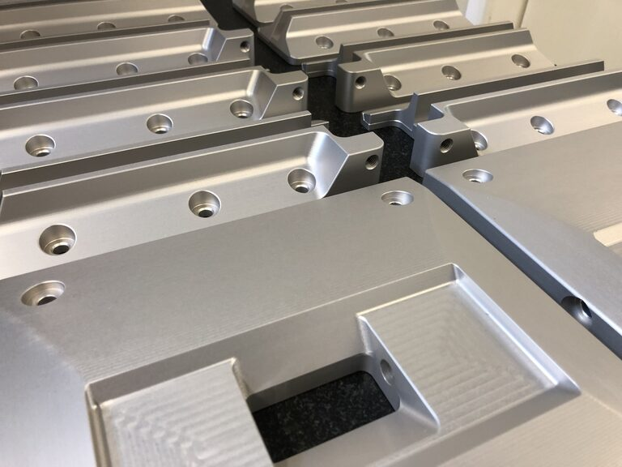
02 / FräsenCNC 5-Achsen Fräsen
Wir produzieren Ihre Fräskomponenten in CNC-Lohnfertigung. Eine unserer besonderen Stärken liegt in der Herstellung von komplexen und anspruchsvollen Bauteilen mit niedriger Stückzahl.
-
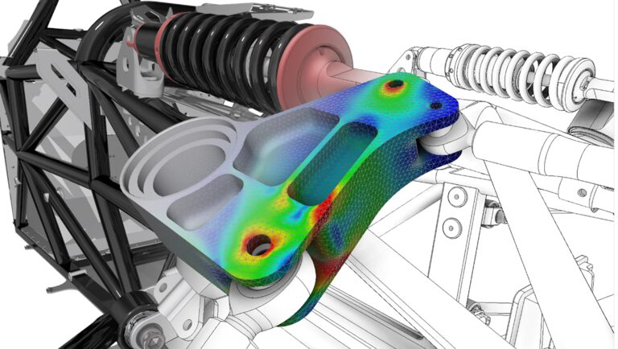
03 / KonstruktionEntwicklung und Konstruktion
Wir konstruieren Präzisionskomponenten und erstellen alle dazugehörigen Fertigungsunterlagen. Auch komplette Baugruppen entwickeln wir, und Maschinenbauteile berechnen und simulieren wir im Haus.
Was auf unseren Maschinen möglich ist
635 × 535 × 460
mm, Awea FCV-620, Fräsen CNC 5-Achsen mit Roboterautomation
≤ 1 µm
Messplatz mit Höhenmessgerät, Fehlergrenze 2 + 2L/1000 µm
Ø 340
mm, Nakamura-Tome AS200LMYS
15'000
rpm, 60-fach Werkzeugwechsler
9
Fräsen, Drehen, Schleifen, Sägen, Messtechnik
Stahl · Aluminium · Messing · Kunststoff · Nickelbasislegierungen (Hastelloy, Inconel) · Titanlegierungen
Von der Idee bis zum fertigen Produkt
Maschinentechnik von der Idee bis zum fertigen Produkt: Wir bieten Entwicklung und Produktion aus einer Hand. Profitieren Sie von unserer Fertigungskompetenz bereits in der Entwicklungsphase.
Durch unsere langjährige Erfahrung begleiten wir Sie von der ersten Idee bis zur wirtschaftlichen Produktion. Entwicklung und Produktion vereinigen wir unter einem Dach. Unsere hoch qualifizierten Mitarbeiter sind ein Garant für Qualität.
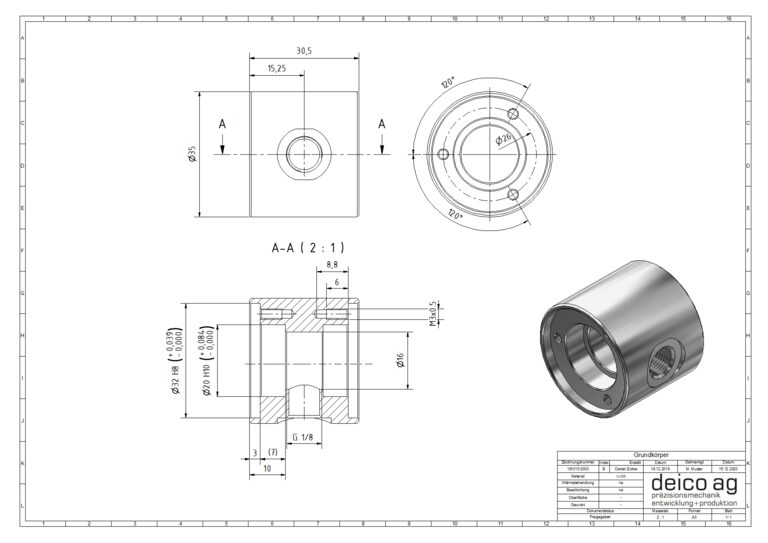
Fertigungskompetenz im Detail
-
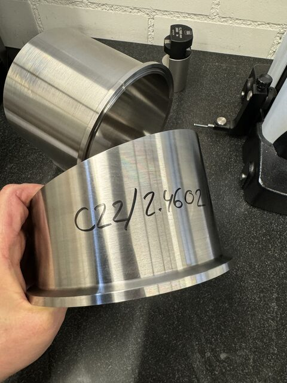
WerkstoffeSchwer zerspanbare Werkstoffe
Wir verarbeiten auch schwer zerspanbare Materialien wie Nickelbasislegierungen (Hastelloy, Inconel) oder Titanlegierungen.
-
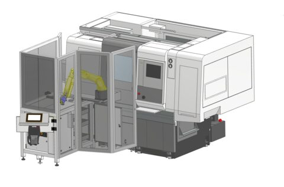
AutomationKostengünstige Serien
Durch unsere automatisierten Fertigungsmaschinen fertigen wir Serien kostengünstig.
-
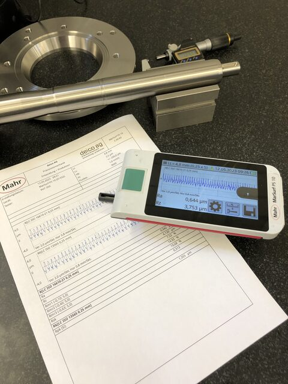
MesstechnikOberflächen messen und protokollieren
Oberflächen von Bauteilen für die Lebensmittel- und Pharmaindustrie sowie die Medizinaltechnik müssen hohen Ansprüchen genügen. Dank moderner Messmittel messen und protokollieren wir sie.
-
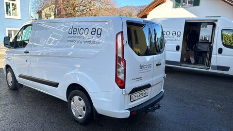
LogistikEigener Lieferservice
Ihre Komponenten liegen uns am Herzen. Deshalb liefern wir persönlich mit unserem eigenen Lieferservice.
-
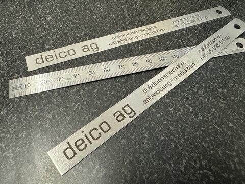
BeschriftungLaserbeschriftung
Über unsere Partnerbetriebe realisieren wir verschiedenste Laserbeschriftungen.
-
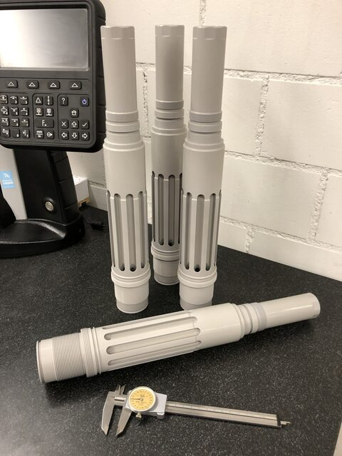
OberflächenOberflächenbehandlung
Über unsere Partnerbetriebe sind verschiedenste Oberflächenbeschichtungen möglich, bei Aluminium zum Beispiel Eloxieren, Hartanodisieren oder Hartematalieren.
Wenn es nicht ab Katalog geht
-
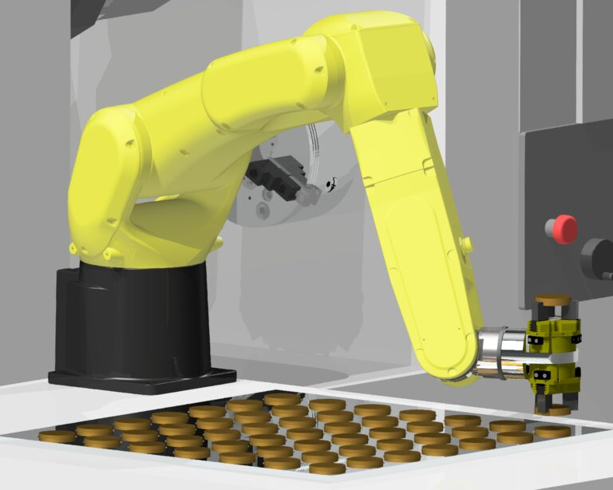
AutomationRoboterzubehör
Wir entwickeln und produzieren individuelles Roboterzubehör wie Greiferbacken, Adapter für diverse Greifer oder Teileraster für spezielle Werkstücke.
-
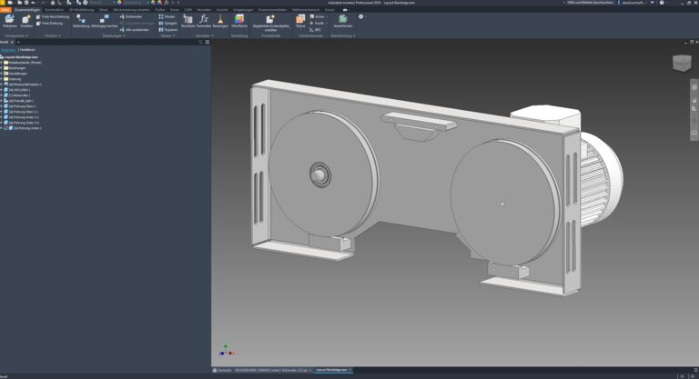
KonstruktionBlechkonstruktionen
Mit unserem CAD erstellen wir Blechkonstruktionen und deren Abwicklungen. Die Bleche lassen wir über unsere Partnerbetriebe fertigen.
-
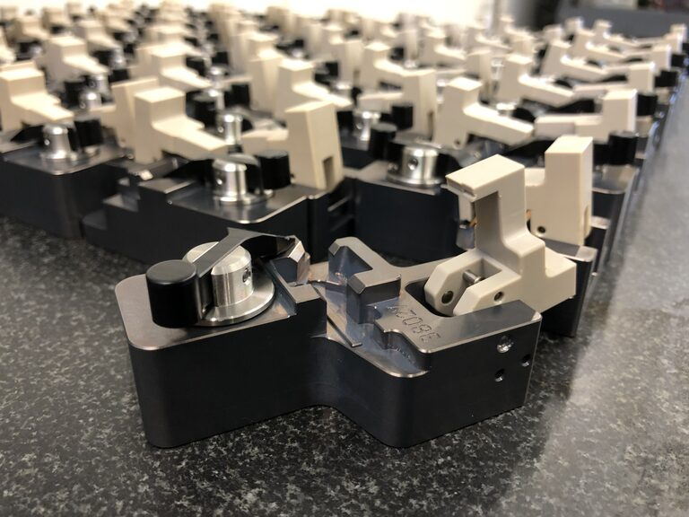
MontageMontage
Wir montieren Ihre Vorrichtungen, Baugruppen, Anlagen und Maschinen.
In unterschiedlichsten Branchen zu Hause
Wir verarbeiten diverse Materialien wie Stahl, Aluminium, Messing und Kunststoff. Oberflächen- und Wärmebehandlungen sind über unsere Partnerbetriebe möglich.
- 01 Maschinentechnik
- 02 Pharmaindustrie
- 03 Sportgeräte
- 04 Textilindustrie
- 05 Medizinaltechnik
- 06 Baumaschinen